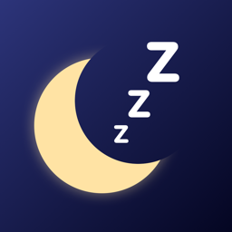

iSnore
iSnore listens while you sleep and counts every snore. In the morning it shows how the night went, and it helps you find what makes you snore less.
How it works
Tonight. Put your iPhone on the nightstand, plugged in, and tap Start. You can lock the screen. An Apple Watch app is included too.
In the morning. See how many times you snored, how that compares with your recent nights, and when in the night it happened. You can listen to the loudest snore from each half hour.
Night after night. Pick something to try, such as sleeping on your side or skipping alcohol before bed. iSnore shows whether your count went down on the nights you did it, and a graph shows your progress over the days.
Private by design
The sound is analyzed on your device and never leaves it. There are no accounts, no ads and no tracking.
iSnore is not a medical device and cannot diagnose sleep apnea or any other condition. If your snoring worries you, talk to a doctor.